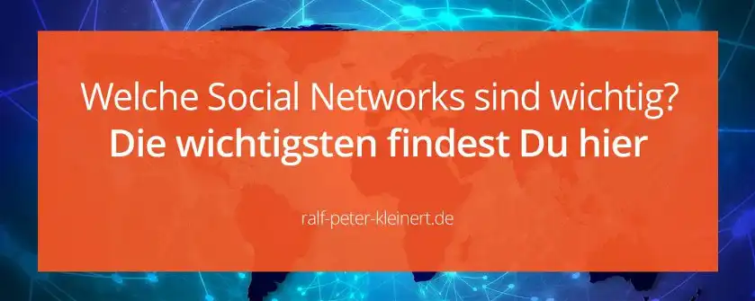

Die wichtigsten sozialen Netzwerke für Social Media Manager
Es gibt inzwischen unzählige Social Networks und es kann gar nicht mehr pauschal gesagt werden: Diese und jene sozialen Netzwerke werden unbedingt benötigt. Ganz klar ist zu sagen, dass es durchaus eine Auswahl zu den wichtigsten sozialen Netzwerken gibt und einige davon habe ich hier aufgelistet. Aber du solltest grundsätzlich analysieren welche Social Networks für das entsprechende Unternehmen infrage kommen. Alle Analysen müssen hier zusammen wirken. Unternehmens-, Kunden-, Markt-, Produkt- und Strategieanalysen sind nur einige.
Ich habe zum Thema Analysen und Analysieren einen separaten Artikel geschrieben, der dir hilft das alles besser zu verstehen. Es ist wirklich wichtig, dass du als Social Media Manager genau weißt, was du tust und da sind die Analysen die besten Werkzeuge. Facebook ist so unfassbar riesig, unbedingt nutzen
Facebook ist das größte und eines der wichtigsten Social Media Networks weltweit. Für einen Social Media Auftritt empfehle ich jedem Unternehmen, sich hier zu präsentieren. Wenn ein Unternehmen auf Facebook vertreten ist, ist erfolgreiches Marketing auch nicht weit. Vorausgesetzt du machst in deinem Job alles richtig. Viele weitere und interessante Informationen über Facebook findest du auf meiner Website natürlich auch.
Als eine der meiste besuchen Webseiten kommt YouTube in die enge Wahl
Die größte und meist genutzte Video-Plattform der Welt hört auf den Namen YouTube und gehört zu Google. Durch die Verzahnung mit der Suchmaschine und der Masse an Nutzern, die die Plattform täglich nutzen, nimmt YouTube einen hohen Stellenwert ein. Weiter zählt YouTube als zweitgrößte Suchmaschine der Welt zu den Global-Playern im Internet. Das solltest du dir im Social-Media-Marketing zunutze machen, denn YouTube zählt zu den wichtigsten sozialen Netzwerken ever! Der Haken dabei ist, dass du für YouTube Videos produzieren musst, und zwar möglichst gute Videos.
Videos funktionieren im Marketing am besten, wenn sie denn ordentlich gemacht sind. Nach Statistiken nutzen in Deutschland ca. 90 % aller Jugendlichen diese Website und machen YouTube zur Nr. 1. Die Nutzerzahlen sind gigantisch und stellen alle anderen Videoplattformen in den Schatten. Und hier bekommst du noch, viele weitere Zahlen, Fakten, Daten und Informationen zu YouTube.
Bei jungen Menschen gehört Instagram zu den allerwichtigsten sozialen Netzwerken
Ein riesiges, extrem beliebtes und eines der wichtigsten sozialen Netzwerke ist Instagram und es gehört zum Facebook Konzern. Diese Plattform ist spezialisiert auf Fotos und Videos und wird vor allem von jungen Menschen bevorzugt. Das besondere hier ist, dass man nur Inhalte auf dem Netzwerk posten kann, wenn man ein Handy benutzt. Am Computer kann man zwar die Postings ansehen, jedoch nicht posten. Jeder Nutzer hat Instagram immer dabei, in der U-Bahn und in der Berufsschule, sowie auf der Arbeit. Unbedingt sollte dieses Netzwerk für Social-Media-Marketing genutzt werden. Jedoch erwarten die meist jungen Nutzer hier schöne Bilder.
Twitter ist auf schnelle Nachrichten spezialisiert, kann sich lohnen
Das Social Network Twitter wird auch als Kurznachrichtendienst bezeichnet und ist technisch ein Mikro-Blogging-System. Die Nachrichten, auch Tweets genannt sind aktuell auch 280 Zeichen begrenzt. Du benötigst also Übung, um mit diesen 280 Zeichen den treffenden Spruch zu formulieren. Ein hohe Postingfrequenz ist hier ziemlich wichtig und der Dienst wird eher von Menschen genutzt die schnelle Informationen wie Nachrichten brauchen. Im Jahr 2009 verzeichnete Twitter nur in Deutschland eine Nutzerzahl von 1,8 Millionen und diese dürfte sich bis heute deutlich erhöht haben.
Allerdings wird Twitter nicht so intensiv genutzt wie z. B. Facebook. Für ein Unternehmen und Social-Media-Marketing empfehle ich Twitter bedingt. Es kommt hier einfach stark auf das Unternehmen oder Produkt an.
Stark im Kommen ist Pinterest, unbedingt mal anschauen
Bei Pinterest dreht sich alles um Bildgebung. Hier kannst du sogenannte Pins an Pinnwände posten. Das Netzwerk ist nicht ganz so bekannt, wird aber immer beliebter. Für Social-Media-Marketing durchaus empfehlenswert.
LinkedIn zählt zu den Professionell Networks, hochinteressant
LinkedIn ist ein soziales Netzwerk für Unternehmen und Berufstätige sowie zum Suchen und Finden von Arbeitsplätzen. Die User können sich hier vernetzen und Ideen austauschen sowie Geschäftskontakte knüpfen. LinkedIn kann hochinteressant für Social-Media-Marketing sein.
Ich finde Blogger cool, kann nicht schaden, sag ich da
Blogger ist eine Blogging Plattform und gehört ebenfalls zu Google. Alleine deswegen sollte Blogger meiner Meinung nach auch eine Rolle spielen. Ich selbst betreibe auch einen Blog bei Blogger. Die Blogs von Google sind kostenlos und machen einen sehr guten Eindruck, wenn sie richtig genutzt werden.